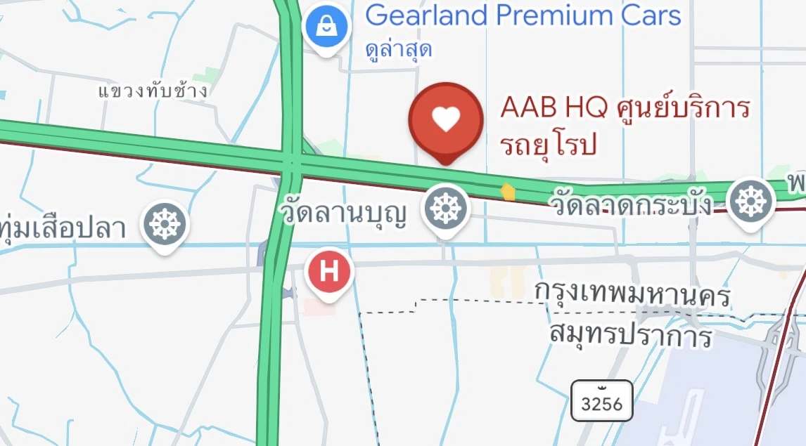

Service centre in Lat Krabang, Bangkok
AAB HQ is the convenient short name for All About Bimmer. Both names refer to the same service centre in the Lat Krabang area of Bangkok.

Open Google Maps / Directions ↗Please use our provided Google Maps directions link or contact the team for the correct entrance before your first visit.
Frequently asked questions
Are AAB HQ and All About Bimmer separate branches?
No. These are two names referring to the same service centre at the same location.
Which name should I search on Google Maps?
Use the directions link on this page, supplied by AAB, for the intended destination.
How do I arrange a visit?
Call +66 92 564 9623 or +66 65 562 9898, or contact LINE Official @allaboutbimmer.